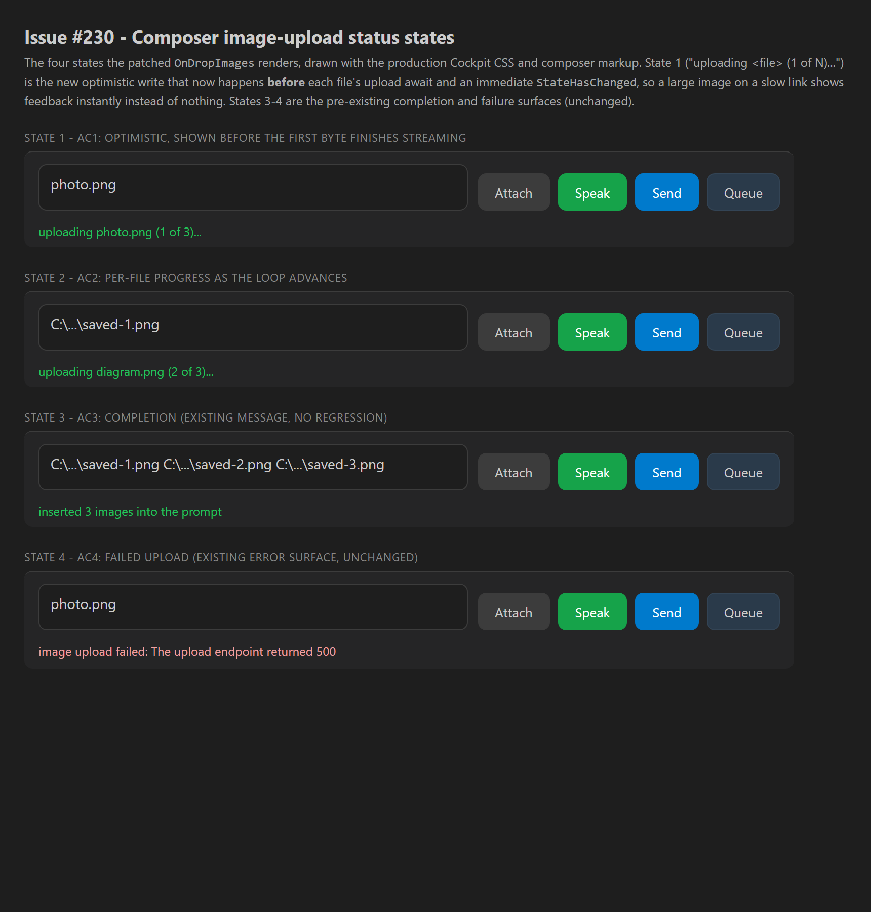

area: CcDirector.Cockpit epic: #280 optimistic-UI sweep Developer Agent proof
The Cockpit composer's OnDropImages handler
(src/CcDirector.Cockpit/Components/Pages/Cockpit.razor) uploaded each dropped/selected
image (up to 20 MB) over the tailnet, but the only status it wrote was the
inserted N image(s) line written after each file finished. A large image on a slow
link therefore showed nothing for several seconds.
The fix sets _shotStatus optimistically before each file's upload await and calls
StateHasChanged immediately, so the user sees
uploading <filename> (i of N)... the moment the drop registers, updated per file as the
loop advances. The existing completion (inserted N image(s)) and failure
(image upload failed: <msg>) surfaces are unchanged.
The new status write + render sit above OpenReadStream/UploadImageAsync,
inside the existing per-file try (the upload's boundary). total is captured
once; index increments per file.
var files = e.GetMultipleFiles(10);
+var total = files.Count;
var sent = 0;
+var index = 0;
foreach (var f in files)
{
+ index++;
Log.LogInformation("Cockpit action=attach ...", sel.SessionId, dir, f.Name, f.Size);
try
{
+ // Optimistic status: render BEFORE the upload await so a large image on a slow
+ // link shows feedback immediately instead of nothing until the bytes finish.
+ _shotStatus = $"uploading {f.Name} ({index} of {total})...";
+ await InvokeAsync(StateHasChanged);
+
await using var s = f.OpenReadStream(20 * 1024 * 1024, _cts.Token); // 20 MB cap
var path = await Director.UploadImageAsync(dir!, sel.SessionId, s, f.Name, ...);
...
sent++;
_shotStatus = $"inserted {sent} image{(sent == 1 ? "" : "s")} into the prompt";
await InvokeAsync(StateHasChanged);
}
catch (Exception ex)
{
_actError = $"image upload failed: {ex.Message}"; // unchanged failure surface
Log.LogWarning(ex, "upload-image failed for {File}", f.Name);
}
}
| # | Criterion | How the code satisfies it | Result |
|---|---|---|---|
| 1 | On dropping N images, status shows uploading <file> (1 of N)... before the
first file's bytes finish streaming. |
The _shotStatus write + StateHasChanged are above the
OpenReadStream/UploadImageAsync await, so the frame renders before any
bytes leave the browser. State 1 in the screenshot. |
PASS |
| 2 | Status updates per file as the loop progresses ((2 of N), ...). |
index increments each iteration and the optimistic write re-runs per file, so each
file's status renders before its own upload. State 2 in the screenshot. |
PASS |
| 3 | On completion the existing inserted N image(s) message shows and the images are in
the composer (no regression). |
The post-upload sent++ / inserted ... write and the
InsertIntoComposer call are untouched. State 3 in the screenshot. |
PASS |
| 4 | On a failed upload the existing image upload failed: <msg> surface still shows. |
The catch block writing _actError is unchanged. State 4 in the
screenshot. |
PASS |
The four states rendered with the production Cockpit CSS
(wwwroot/app.css) and composer markup. The status strings are the exact C# interpolations
the patched handler writes. Fixture: states.html; image: states.png.

dotnet build cc-director.sln -> Build succeeded. 0 Warning(s), 0 Error(s).scripts\local-build-avalonia.ps1 -Slot 5 -> built cc-director5.exe;
launched via the cc-director-launch scheduled task (Control API came up on
http://127.0.0.1:7885), confirming the build is runnable.No drift. This is a UI status-copy/timing change in one Blazor component; no architecture or
security posture change, and no security_profile.yaml rule (DT-01..DT-NN) is touched.